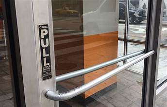

What is Universal Design
Normans Design Concepts
Affordance
Affordance deals with the user's interpretation of the function of a device. Perceived affordance is more difficult to interpret as the function and interpretation of the device may not clearly match up. An example of a failure of connection between interpretation and function would be a “Norman Door” where the door indicates it should be pushed open when it actually is pulled open.
Constraints
Constraints are the reverse of affordances, and deal with the devices limits. The user is given constraints so that they don’t misuse the item and injure the device or themselves. Constraints are either physical where its properties limit its usability, or cultural where experience and conventions provide learned constraints.
Feedback
Feedback allows for communication between the user and the device so that the device can better accommodate the user. For example, complex features of the device may be hidden to prevent the user from being overwhelmed, but can be revealed at the users request, once they feel comfortable operating the device.
Visibility
Visibility helps to ensure that affordances and constraints are made clear to the user so that they operate the device properly. Some features may be made invisible if the device is in a particular state so the user knows that such features cannot be used in that state.
Page Layout
- Avoid clutter and dense displays. The amount of clutter on a webpage is generally an agreed upon concept for most users. Important items should not be lost within the rest of the content of the page.
- Consistency. Allow users to anticipate where items are on the page by placing similar items in the same spots across pages.
- Important Items. Place the most important items in the top center of your page, such as navigation and critical content. There should also be an established level of importance for your page with less important items towards the bottom and a hierarchy that allows for systematic scanning.
- Alignment. Text boxes, rows, columns, data entry points and all other aspects of the page should be consistently aligned either horizontally or vertically.
- Fluid Layouts. It is generally recommended to use as much screen space as possible to keep information above the fold of your page. Different size monitors and resolutions can be accounted for with fluid layouts.
- Page/Line Length. Shorter pages are recommended for homepages and navigation pages while longer pages may be necessary for uninterrupted text, matching structure, or making the page easy to download and print. Line length is recommended to be 75-100 characters per line for maximum reading speed while 50 characters per line is generally pleasing to the eye.
Resources
Resources
- Kramer, Howard. “Universal Design for Digital Media - a 3-Credit Course*.” Accessing Higher Ground, 11 Dec. 2013, accessinghigherground.org/udclass/.
- Usability.Gov: Improving the User Experience. Digital Communications Division, U.S. Department of Health and Human Services.
- “We Have Web Accessibility in Mind.” WebAIM, webaim.org/. Accessed 9 Dec. 2024.